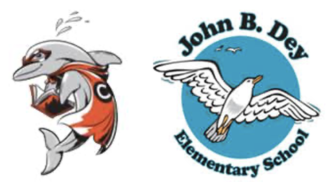
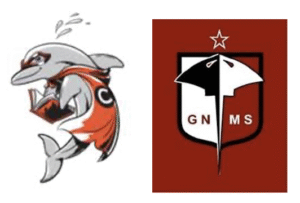

Trois étapes d’inscription : l’EFAN, le CNED et l’établissement américain.
1) L’inscription à l’EFAN
DEPUIS LA FRANCE : inscription en ligne à l’EFAN
Vous devez inscrire votre enfant en ligne à l’EFAN à partir du 1er avril.
Les inscriptions pour l’année scolaire 2026-2027 sont ouvertes. Cliquez sur le bouton « Formulaire d’inscription » ci-dessous pour commencer.
Les inscriptions tardives ou en cours d’année sont possibles.
L’inscription n’est considérée comme complète qu’une fois tous les documents requis remplis, transmis à l’administration de l’école et les frais correspondants réglés. Les documents requis comprennent le règlement intérieur, le code de conduite, l’acceptation des conditions générales et le règlement financier, ainsi que les pièces suivantes :
École élémentaire
- Fournir les bulletins scolaires des trois dernières années.
- Transmettre le bulletin du troisième trimestre 2026 dès réception.
Collège
- Fournir une copie du passeport de l’élève au format PDF.
- Fournir les bulletins scolaires des trois dernières années.
- Transmettre le bulletin du troisième trimestre 2026 dès réception.
Lycée
- Fournir une copie du passeport de l’élève au format PDF.
- Fournir les bulletins scolaires à partir de la classe de quatrième (Grade 8).
- Transmettre le bulletin du troisième trimestre 2026 dès réception.
- Pour toute inscription en seconde (Grade 10), fournir l’attestation de réussite au diplôme national du brevet (DNB).
- Pour toute inscription en terminale (Grade 12), fournir les résultats des épreuves anticipées de français dès leur publication.
Pour tous : veiller à ce que les vaccinations des enfants soient à jour.
Formulaires d’inscription et pièces à fournir
Prenez connaissance des documents suivants et complétez-les pour inscrire votre enfant. L’ensemble doit être transmis avant que l’inscription puisse être finalisée. Pour toute question ou besoin d’aide, n’hésitez pas à contacter le secrétariat.
Formulaire d’inscriptionRèglement intérieurCode de conduiteAcceptation des conditionsRèglement financier
2) L’inscription au CNED
La direction de l’EFAN s’en charge fin juin ou en juillet : vous n’avez aucune démarche à effectuer.
3) L’inscription dans l’établissement américain
DEPUIS LES ÉTATS-UNIS : inscription sur place dans l’établissement américain
Après votre installation à Norfolk ou à Virginia Beach, vous devez inscrire votre enfant dans l’établissement américain. Cette démarche se fait sur place, en présence de l’élève, et ne peut pas être anticipée depuis la France.
En détail dans l’onglet « Inscription dans les établissements américains ».
Inscription au collège et au lycée : vous choisirez les matières du cursus américain avec l’aide du guidance counselor.
Cas particulier du lycée : les bulletins français traduits et certifiés vous seront demandés.
En détail dans l’onglet « Traduction des bulletins ».
Les établissements américains partenaires de l’EFAN

Élémentaire (de la grande section au CM2)
Norfolk : Crossroads Elementary School
Virginia Beach : John B. Dey Elementary School

Collège (de la 6e à la 4e)
Norfolk : Crossroads Middle School
Virginia Beach : Great Neck Middle School
Lycée (de la 3e à la terminale)
Virginia Beach : Frank W. Cox High School